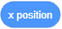
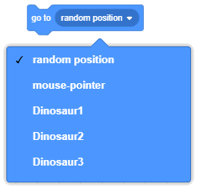
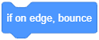
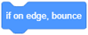
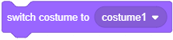
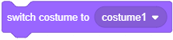

Më thuaj ku të shkoj - Koordinata dhe drejtimi¶

Pasi të njihni bazat e mjedisit, është koha të mësoni se si mund t’i dërgoni sprites tuaj në vendin e dëshiruar në skenë. Për ta bërë atë, duhet të dini se si organizohet faza dhe cilat komanda mundësojnë lëvizjen.
Skena
Kur hapni Scratch, skena krijohet automatikisht: një drejtkëndësh i bardhë 480 pika i gjerë dhe 360 pika i lartë. Pika më e vogël që mund të shfaqet në një ekran grafik kompjuterik quhet Pixel.
Skena është aty ku do të zhvillojnë tregimet, lojërat dhe animacionet tuaja. Shtë i palëvizshëm, si një akuariumi, por banorët e tij - Sprites janë gjithmonë në lëvizje dhe bashkëveprojnë me njëri-tjetrin. Për të kontrolluar me lehtësi lëvizjet e sprites, secilës vend në skenë i është caktuar një adresë - koordinatat x dhe y, këto koordinata paraqesin distancën e asaj vendi të veçantë nga qendra e skenës. Pika, e cila është e vendosur në qendër të fazës ka koordinatat х = 0 dhe у = 0, ose (0,0).
Koordinatat na lejojnë të lëvizim me saktësi sprites tonë nëpër skenë dhe t’i pozicionojmë ato kudo që dëshirojmë (x, y). Pozicioni aktual i sprite mund të shihet në informacionin aktiv të sprite.
Funksionet e blloqeve Motion
Të gjitha komandat, të cilat mundësojnë pozicionimin e sprite në vendin e dëshiruar dhe kontrollojnë drejtimin dhe lëvizjen e tij, janë të vendosura në grupin e blloqeve të quajtur lëvizja. Në këtë mësim, ju do të mësoni më shumë rreth blloqeve të lëvizjes dhe si të përdorni blloqet e reportazheve, duke parë shembuj dhe duke bërë ushtrime. Blloqet e reporterëve nuk korrespondojnë me komandat gjuhësore, dhe ato nuk mund të qëndrojnë në mënyrë të pavarur në një skenar. Funksioni i një blloku reporterësh nga grupi Motion është ruajtja e koordinatave dhe udhëzimeve aktuale të Sprites.
Motion Reporters
Në këtë grup ekzistojnë blloqet  dhe  , të cilat përmbajnë informacionin aktual për pozicionin e sprite (koordinatat e tij x dhe y), dhe bllokun , i cili paraqet drejtimin e sprite.
, të cilat përmbajnë informacionin aktual për pozicionin e sprite (koordinatat e tij x dhe y), dhe bllokun , i cili paraqet drejtimin e sprite.
Nëse doni të shihni koordinatat aktuale dhe drejtimin e sprite, duhet të klikoni në kutinë e kontrollit ngjitur me bllokun e dëshiruar. Nëse klikoni në kutitë e kontrollit pranë reporterëve të lëvizjes, ekranet me të cilat mund të monitoroni koordinatat aktuale dhe drejtimin e sprite do të shfaqen në skenë.

Lëvizja relative dhe absolute
Ju mund të dërgoni spriten tuaj në një vend të veçantë në skenë në dy mënyra të ndryshme: me lëvizje absolute ose relative.
Lëvizja Absolute është duke lëvizur në një vend - destinacion specifik, pavarësisht nga pozicioni aktual i sprite.
Në Scratch ju mund ta dërgoni sprite tuaj në një pozicion të caktuar (х, у) në skenë, domethënë, ju mund të kryeni lëvizje absolute duke përdorur blloqet e mëposhtme:
- shkoni në pozicionin (х, у),
-  - rrëshqisni në pozicionin (х, у),
-
- rrëshqisni në pozicionin (х, у),
-  - vendosni koordinatën x në pozicion,
-
- vendosni koordinatën x në pozicion,
-  - vendosni koordinatën y në pozicion.
- vendosni koordinatën y në pozicion.
duke përdorur bllokun i sprite do të lëvizë menjëherë në pozicionin e dhënë (х, у).
Në mënyrë të ngjashme, objektivi do të arrihet me bllokun , por masa nuk do të ishte e menjëhershme; do të zgjaste një numër i caktuar sekondash. Sa më i lartë të jetë numri i sekondave të dhëna, aq më shumë do t’i duhet spërkatjes për të arritur në destinacionin e saj.
Një mënyrë tjetër për të vendosur një destinacion në lëvizje absolute është vendosja në mënyrë të pavarur e koordinatave x dhe y, duke përdorur blloqet dhe .
Lëvizja Relative është duke lëvizur në një vend të përcaktuar nga numri i hapave që do të bëjë sprite nga pozicioni aktual. Sigurisht, ju gjithashtu duhet të vendosni drejtimin në të cilin duhet të lëvizë sprite (djathtas, lart, etj.).
Një mënyrë tjetër për të vendosur një destinacion në lëvizje relative është të vendosni në mënyrë të pavarur koordinatat x dhe y, duke përdorur blloqet c hange_x| dhe .
Në Scratch, ju mund ta dërgoni sprite në një vend të përcaktuar nga numri i hapave nga pozicioni i tij aktual, domethënë, ju mund të kryeni lëvizje relative duke përdorur blloqet e mëposhtme:
- - zhvendosni një sasi të caktuar pikselash horizontalisht në lidhje me pozicionin aktual,
- - zhvendosni një sasi të caktuar pikselash vertikalisht në lidhje me pozicionin aktual (х, у),
- |ana_right| - ktheni djathtas një sasi të caktuar shkallësh në lidhje me drejtimin aktual,
- |ana_left| - ktheni majtas një sasi të caktuar shkallësh në lidhje me drejtimin aktual,
-  - lëvizni një sasi të caktuar hapash në drejtimin e dhënë në lidhje me pozicionin aktual.
- lëvizni një sasi të caktuar hapash në drejtimin e dhënë në lidhje me pozicionin aktual.
 dhe
dhe 
Ekzistojnë tre mënyra për të vendosur një vlerë në fushën hyrëse të bllokut të parë:

për të zgjedhur njërën prej vlerave të ofruara nga lista rënëse, për shembull (0) lart;
(2) shkruani një vlerë të re, në vend të së vjetër, për shembull 45; (3) për të rrotulluar shigjetën blu që tregon drejtimin në informacionin aktual të Sprite.
Nga lista e lëshimit mund të zgjidhni se cili objekt do të drejtohet Sprite në bllokun tjetër.

Drejtimi dhe rrotullimi
Përveç blloqeve të rrotullimit |kthesës_right| dhe  , të cilat ju lejojnë të ndryshoni drejtimin në lidhje me drejtimin aktual të sprite, në Scratch, ekziston një mundësi për të përdorur blloqe që vendosin drejtimin pavarësisht nga pozicioni aktual i Sprite.
, të cilat ju lejojnë të ndryshoni drejtimin në lidhje me drejtimin aktual të sprite, në Scratch, ekziston një mundësi për të përdorur blloqe që vendosin drejtimin pavarësisht nga pozicioni aktual i Sprite.
Këto janë blloqet|point_direction| dhe .
Në figurën e mëposhtme mund të gjeni vlerat kryesore të drejtimit të cilat mund të vendosni në fushën hyrëse të bllokut të parë: lart (Veri), djathtas (Lindje), poshtë (Jug) dhe majtas (Perëndim).
Ju gjithashtu mund të vendosni vlera të tjera, për shembull, vlera 45 do të tregojë rrjedhën në drejtim të verilindjes, dhe 135 në juglindje. Për ta treguar atë në perëndim, nuk keni nevojë të përdorni numra negativë. Në vend të kësaj mund të shkruani numra nga 180 në 360.
{kind=link}
Blloku i dytë tregon pikën drejt një treguesi të miut ose drejt një avulli tjetër në projekt. Duke klikuar në trekëndëshin e bardhë në fushën e vlerës, ju mund të hapni listën rënëse dhe të zgjidhni se cili objekt dëshironi të tregoni burimin tuaj. Për shembull, në projektin “Shëtitje Dinosauri”, i cili do të analizohet më vonë në këtë mësim, macja mund të drejtohet në drejtim të treguesit të miut ose drejt njërit prej tre dinosaurëve, të cilët përfaqësojnë sprita në këtë projekt.
 Studioni shembujt¶
Studioni shembujt¶
Ne kemi treguar mënyrën e thjeshtë për ta bërë fjalën tonë sprite në projektin tonë “Hello World”, dhe pastaj duke bërë ushtrime të azhurnuar projektin tonë në mënyrë që sprite të shqiptojë vërtet tekstin, ne do të tregojmë tani komandat themelore të cilat do të na mundësojnë të lëvizim tonë, dhe pastaj ne do t’i përmirësojmë ato përmes ushtrimeve të ndryshme.
Shembulli 1 - Projekti “The Walk”¶
||1| Klikoni në blloqet Motion, dhe pastaj tërhiqni bllokun në Script Area dhe klikoni mbi të. Macja do të lëvizë 10 hapa djathtas.
 Klikoni disa herë në këtë bllok dhe çojeni mace në skajin e djathtë të ekranit.
Klikoni disa herë në këtë bllok dhe çojeni mace në skajin e djathtë të ekranit.
Klikimi i përsëritur në bllokun e lëvizjes ka lejuar që veprimi i caktuar nga ky bllok, të përsëritet disa herë. Përsëritja e një veprimi të veçantë mund të arrihet edhe me kodim.
 Kthejeni macen në mes të ekranit dhe klikoni në blloqet Control. Blloqe në formë të ndryshme nga ato që keni përdorur do të shfaqen në Bleta Palette - blloqe në formë C me një “gojë” në të cilën mund të futni blloqe të tjera.
Kthejeni macen në mes të ekranit dhe klikoni në blloqet Control. Blloqe në formë të ndryshme nga ato që keni përdorur do të shfaqen në Bleta Palette - blloqe në formë C me një “gojë” në të cilën mund të futni blloqe të tjera.
 Zgjidhni bllokun
Zgjidhni bllokun  dhe tërhiqeni atë në Zonën e Shkrimeve. Duke klikuar në këtë bllok mundëson që të gjitha blloqet që janë futur në të të funksionojnë përgjithmonë (derisa të ndaloni ekzekutimin e programit duke klikuar në shenjën stop).
dhe tërhiqeni atë në Zonën e Shkrimeve. Duke klikuar në këtë bllok mundëson që të gjitha blloqet që janë futur në të të funksionojnë përgjithmonë (derisa të ndaloni ekzekutimin e programit duke klikuar në shenjën stop).
 Vendosni një bllok lëvizje në “gojën” e bllokut të përsëritur përgjithmonë dhe klikoni mbi ato. Macja do të dalë përsëri në ekran.
Vendosni një bllok lëvizje në “gojën” e bllokut të përsëritur përgjithmonë dhe klikoni mbi ato. Macja do të dalë përsëri në ekran.
Ekziston një mënyrë për të mbajtur lëvizjen e sprite brenda kufijve të ekranit. Kjo do të ishte të përdorni bllokun me komandën nëse në buzë, fryrje. Ky bllok është i vendosur në blloqet Motion.
 Ndaloni ekzekutimin e blloqeve duke klikuar në shenjën stop dhe më pas tërhiqni bllokun  në zonën e Skriptit dhe futeni në “gojën” e bllokut të përsëritur përgjithmonë, poshtë bllokut të lëvizjes.
Ndaloni ekzekutimin e blloqeve duke klikuar në shenjën stop dhe më pas tërhiqni bllokun  në zonën e Skriptit dhe futeni në “gojën” e bllokut të përsëritur përgjithmonë, poshtë bllokut të lëvizjes.
Shkrimi i mëposhtëm shtohet në spritein e maceve.

Duke drejtuar këtë skenar të ndryshuar, macja do të lëvizë vazhdimisht nga një skaj në tjetrin, por kur të zhvendoset në të majtë, do të përballet me mënyrën e gabuar. Sigurisht, ekziston një mënyrë për ta rregulluar këtë. Njëra është të ndryshoni mënyrën e lëvizjes së sprite në Informacionin Sprite, dhe tjetra është të përdorni një nga blloqet e rrotullimit.
Zvarrit bllokun |rotacioni_style| nga blloqet Motion dhe vendoseni sipër bllokut të përsëritur përgjithmonë. Sigurohuni që mënyra e rrotullimit majtas-djathtas është zgjedhur nga lista dropdown e këtij blloku.
Vendosni | klikuar_flag | bllok në krye të Script, dhe duke bërë këtë ju keni përfunduar projektin “Ecni”.
Tani mund ta drejtoni projektin duke klikuar në flamurin e gjelbër dhe ta ndaloni duke klikuar në shenjën stop. Ruani projektin dhe vazhdoni të eksploroni.
Në projektin tonë të ardhshëm, ne do të tregojmë se si ju mund të prezantoni sprites dhe sfondet e reja, dhe si të udhëzoni një sprite duke përdorur treguesin e miut. Prandaj, para se të kaloni në këtë shembull, shikoni mësimet shtoni një Sprite dhe Shtoni një sfond.
Shembulli 2 - “Dinosauri ecën”¶
Në shembullin e mëparshëm, ne kemi përdorur bllokun forever për ta bërë që maceja e maces të lëvizë vazhdimisht midis skajeve të ekranit derisa të ndalojmë ekzekutimin e projektit duke klikuar në shenjën stop. Në këtë projekt, ne do të kemi katër sprites, dhe secila prej tyre do të ketë skriptet e tyre, të cilat do të përcaktojnë sjelljen e tyre. Macja do të ndjekë treguesin e miut përgjithmonë, dhe tre sprites e mbetura - dinosaurët, do të drejtohen përgjithmonë drejt maceve. Pamja e fazës në fillim të drejtimit të projektit është paraqitur në figurën vijuese.

Creation of the Project
Shembulli 2 - “Ecni Dinosauri”¶
** Krijimi i Projektit **
Ju mund të shtoni një sfond të ri në projekt duke klikuar ikonën e vendosur në të djathtë, ngjitur me ikonën Zgjidhni një Sprite, e cila përdoret për zgjedhjen e spritave të reja.
 Klikoni në ikonën për të zgjedhur sfondet dhe zgjidhni sfondin Jurassic nga biblioteka e prapavijës.
Klikoni në ikonën për të zgjedhur sfondet dhe zgjidhni sfondin Jurassic nga biblioteka e prapavijës.
Zgjidhni sprites Dinosaur1, Dinosaur2 dhe Dinosaur3 nga biblioteka e Sprites.
Vendosni sprites tuaj si ato janë në figurën e mësipërme. Ju duhet të ndryshoni drejtimin e Dinosaur2. Vlera e paracaktuar e drejtimit për të gjitha sprites është 90: sup: о (ata po kërkojnë në të djathtë) dhe stili i tyre i rrotullimit është Gjithë Rreth. Të gjitha këto cilësime mund të ndryshohen në pjesën e informacionit Sprite ose duke përdorur blloqe të përshtatshme për të formuar skriptet që i shtohen një Sprite të veçantë. Në këtë projekt, ne do të përdorim opsionin e parë.
Në dritaren e informacionit Sprite vendosni stilin e rrotullimit si më poshtë: Dinosaur1 - mos rrotullohet, Dinosaur2 * - *majtas / djathtas, Dinosaur3 - All.
Të gjithë dinosaurët shtojnë të njëjtin skenar, i cili do t’i urdhërojë ata të drejtojnë drejt maceve gjatë drejtimit të të gjithë projektit. Sidoqoftë, ata do të sillen ndryshe sepse nuk kanë të njëjtin stil rotacioni në cilësimet e tyre të informacionit Sprite.
Për sprite e maceve ju duhet të vendosni komandat, të cilat do t’i mundësojnë të drejtojnë drejt koordinatave të treguesit të miut, domethënë, të lëvizni nëpër skenë në të njëjtën mënyrë përdoruesi lëviz miun.
Skriptet që përshkruajnë sjelljen e dinosaurëve dhe maceve janë paraqitur në figurën vijuese.

Drejtoni projektin dhe lëvizni miun në skenë. Vini re se dinosaurët janë duke ndjekur lëvizjet e saj në mënyra të ndryshme.
Example 3 – “Linear Motion”¶
Shembulli 3 - “Lëvizja lineare”¶
Studioni tutorialin Përdorni tastet e shigjetave dhe krijoni një projekt ku macja drejtohet rreth skenës me tastierën.
Shtoni bllokun  për macen.
për macen.
Zgjidhni tastin Shigjeta e djathtë.
Zgjidhni bllokoni nga blloqet Motion dhe lidheni atë me bllokun e mëparshëm.
Zgjidhni bllokoni nga blloqet Motion dhe lidheni atë me bllokun e mëparshëm.
Shtypni tastin e djathtë të shigjetës në tastierën tuaj disa herë. Cfare ndodh?
Kopjoni këtë skenar (kliko me të djathtën në bllokun e parë, më pas zgjidhni Dublicate).
Në skenarin e ri, zëvendësoni shigjetën e djathtë me shigjetën e majtë, në pikën bllok në drejtim në vend të 90 zgjidhni -90.
Shtypni tastin e majtë të shigjetës në tastierën tuaj disa herë. Cfare ndodh?
 Në mënyrë të ngjashme, bëni dy skenare të tjera: për të udhëhequr mace 10 hapa përpara duke shtypur tastin shigjetë lart, ose 10 hapa poshtë duke shtypur tastin poshtë shigjetës.
Në mënyrë të ngjashme, bëni dy skenare të tjera: për të udhëhequr mace 10 hapa përpara duke shtypur tastin shigjetë lart, ose 10 hapa poshtë duke shtypur tastin poshtë shigjetës.

Shembulli 4 - “Lëvizja me një kthes딶
Ne do të krijojmë një projekt më shumë për lëvizjen e sprites duke përdorur një tastierë, por me funksione të modifikuara të çelësave të shigjetave. Ne do t’i heqim blloqet për drejtimin dhe do të bashkohemi me butonin shigjetë të majtë dhe tastin shigjetë të djathtë*me komandat të cilat rrotullohen sprite 15 gradë në të majtë ose në të djathtë. Gjithashtu, ne do të bashkohemi me tastin *shigjeta lart * dhe tastin *shigjetë poshtë me bllokun lëvizni 10 hapa,

Ekzektuani projektin dhe provoni se si mund të menaxhoni lëvizjen e sprite.
 E kuptuat?¶
E kuptuat?¶
Pyetja 1¶
- 1280 pixels gjerë dhe 600 pixels gjatë
- 800 pixels gjerë dhe 600 pixels gjatë
- 480 pixels gjerë dhe 360 pixels gjatë
- Saktë.
- 360 pixels gjerë dhe 480 pixels gjatë
Q-10: Cilat janë dimensionet e Skenës?
Pyetja 2¶
:answer_b: në këndin e poshtëm të majtë të Fazës :answer_c: në qendër të Skenës :answer_d: varet nga sfondi i shtuar
- correct
c
- feedback_a
- feedback_b
- feedback_c
Saktë.
- feedback_d
Ku është vendndodhja e pikës me koordinatat (0,0)?
Pyetja 3¶
- Sensing
- Motion
- Saktë.
- Control
- Looks
Q-12: Në cilin grup blloku i përket pozicioni, drejtimi, rotacioni dhe blloqet e menaxhimit të lëvizjes?
Pyetja 4¶
- po
- jo
- Saktë.
Q-13: A mund të bllokojë Stage bllokimin e lëvizjes?
Pyetja 5¶
Q-14: Cilët blloqe mundësojnë lëvizje absolute? (Zgjidhni të gjitha përgjigjet e sakta)

Pyetja 6¶
Q-15: Cilët blloqe mundësojnë lëvizjen relative? (Zgjidhni të gjitha përgjigjet e sakta)

Pyetja 7¶
Q-16: Cila nga blloqet përfaqëson reporterët në lëvizje? (Zgjidhni të gjitha përgjigjet e sakta)

Pyetja 8¶

- Southeast
- Tregon kënd 135 gradë.
- Southwest
- Tregon kënd -135 gradë.
- Northeast
- Tregon kënd 45 gradë.
- Northwest
- Saktë.
Q-17: Në cilën anë Sprite do ta shikojë pasi të drejtojë bllokun  ?
?
Pyetja 9¶
Në figurën e mëposhtme mund të shihni një fazë me pesë pika të ndryshme.

- (-200,-40)
- (-200,40)
- Saktë.
- (200,-40)
- (200,40)
Q-18: Cilat janë koordinatat e Point A?
- Point A
- Point B
- Point D
- Point E
Q-19: Cilat pikë kanë një koordinatë negative y?
(Zgjidhni të gjitha përgjigjet e sakta)
-
Q-20: Duke tërhequr drejtkëndësat, çiftoni pikat me koordinatat e tyre.
Provo Përsëri
- A
- (-200,40)
- B
- (-160,-60)
- C
- (20,0)
- D
- (100,120)
- E
- (180,-80)
Pyetja 10¶
Në figurën e mëposhtme mund të shihni një fazë me gjashtë pika të ndryshme.

-
Q-21: Duke tërhequr drejtkëndësat, çiftoni pikat me koordinatat e tyre.
Provo Përsëri
- A
- (-160,80)
- B
- (-160,-80)
- C
- (160,-80)
- D
- (80,0)
- E
- (160,80)
- F
- (0,80)
- Point А
- This should be the point which has the same x, and the opposite value of the y coordinate as the Point E.
- Point В
- This should be the point which has the same x, and the opposite value of the y coordinate as the Point E.
- Point С
- Correct.
- Point D
- This should be the point which has the same x, and the opposite value of the y coordinate as the Point E.
Q-22: Which point is symmetrical to the Point E with respect to the x axis?
- Point А
- Saktë.
- Point В
- Kjo duhet të jetë pika që ka vlerën e kundërt të koordinatës x, dhe koordinatën e njëjtë y si Point E.
- Point С
- Kjo duhet të jetë pika që ka vlerën e kundërt të koordinatës x, dhe koordinatën e njëjtë y si Point E.
- Point D
- Kjo duhet të jetë pika që ka vlerën e kundërt të koordinatës x, dhe koordinatën e njëjtë y si Point E.
Q-23: Cilat pika janë ekuivalente nga boshti y? (Zgjidhni të gjitha përgjigjet e sakta)
- A dhe B
- A dhe C
- A dhe E
- D dhe F
Q-24: Cilat pika janë ekuivalente nga boshti y? (Zgjidhni të gjitha përgjigjet e sakta)
 Provoje!¶
Provoje!¶
Ushtrimi 1 - Ndiq pozicionin e Sprite¶
Tërhiqeni macen Sprite në këndin e sipërm të majtë të Stage, dhe pastaj kontrolloni informacionin Sprite për të parë koordinatat e pozicionit të ri.
Pastaj tërhiqeni atë në këndin e sipërm të djathtë të Stadit dhe kontrolloni përsëri koordinatat e pozicionit ku e keni lënë.
Përsëriteni atë që sapo keni bërë duke lëvizur Sprite-in tuaj në pjesën e poshtme të Fazës. Në cilat pozicione në Faza ka koordinata x vlera negative, dhe në cilin e bënë koordinatën y?
Importoni Apple Sprite nga libraria e Sprite. Një kornizë blu duhet të shfaqet rreth figurës së Sprite të re në listën Sprite, që do të thotë se Sprite është aktiv. Nëse jo, klikoni në figurën e saj në listën Sprite.
Kontrolloni variablat х position dhe у position në fund të grupit Lëvizje të blloqeve. Monitoruesit Apple: x position dhe Apple: y position do të shfaqen në Stage.
Tani tërhiqni Apple Sprite në pozicione të ndryshme në skenë dhe gjurmoni se si ndryshojnë koordinatat e tij duke shikuar monitorët.
Ushrimi 2 - Vendosja e pozicionit të Sprite duke përdorur blloqet absolute të lëvizjes¶
Klikoni në foton Stage pranë listës Sprite. Një kuti blu do të shfaqet rreth figurës së skenës, që do të thotë se Faza është në fokus.
Klikoni në ikonën Zgjidhni një sfond dhe më pas zgjidhni sfondin Xy-grid nga libraria Backdrop.
Tani klikoni në butonin Code për të marrë bllokun e paletës në vend të listës së sfondit.
Në blloqet Motion do të shihni një mesazh Faza e zgjedhur: asnjë bllok lëvizjeje, e cila është e kuptueshme sepse Skena, e cila tani është aktive, nuk mund të lëvizë.
Klikoni në pllakën e maceve në listën e sprite. Kur një kornizë blu shfaqet rreth figurës së sprite, blloqet Motion do të kthehen.
Zvarritni bllokoni në zonën e shkrimeve, dhe pastaj ndryshoni vlerën e x në 120, dhe vlerën e y në 100.
Klikoni në bllokun e ndryshuar në zonën e shkrimeve. Cfarë ndodh?
Zvarritni bllokoni në zonën e skriptit, dhe pastaj ndryshoni vlerën e x në -120, dhe vlerën e y në 100. Çfarë ndodh kur klikoni në këtë bllok?
Shikoni ku mund ta gjeni Sprite pasi të klikoni në bllokun në të cilin keni ndryshuar më parë vlerat për x dhe y. Për shembull, ku do të jetë Sprite nëse të dy koordinatat janë negative, nëse ato janë jashtë fazës, etj?
Ushtrimi 3 - Lëvizja relative dhe absolute¶
|Mundohuni të drejtoni Sprite nga pika A në pikën B duke përdorur blloqe të ndryshme Lëvizjeje.
Vendosni Rrjetin nga libraria e Sfondit si sfond.
Zgjidhni dy shkronja të reja nga libraria e sprite - shkronjat A dhe B (Blloku-A dhe Blloku-B).
Vendosni shkronjën A në këndin e poshtëm të majtë të Fazës në pozicionin (-200, -120), dhe shkronjën B në këndin e sipërm të djathtë në pozicionin (200, 120). Mënyra më e saktë për ta bërë këtë është të shtoni bllokoni shkronjën A (tërhiqeni atë në zonën e shkrimeve ndërsa shkronja A është aktive) dhe shkruani koordinatat e duhura х dhe у, dhe pastaj klikoni në bllok. Ndiqni të njëjtat hapa për shkronjën B.
Shtoni bllokun për mace dhe zgjidhni Block-A nga lista drop-down (e cila do të shfaqet kur klikoni në trekëndëshin e bardhë në kutinë e zgjedhjes). Shënim. |! = | |Goto_xy|.
Klikoni në bllokun dhe macja do të jetë pas shkronjës A.
Klikoni në blloku  nga grupi Looks blloqet dhe macja do të jetë përpara shkronjës A.
nga grupi Looks blloqet dhe macja do të jetë përpara shkronjës A.

Tani në bllokoni zgjidhni Block-B, dhe pastaj klikoni mbi të. Macja do të jetë menjëherë përpara shkronjës B.
Shtoni bllokun  për mace dhe zgjidhni Block-A nga lista drop-down, pastaj klikoni mbi të. Macja do të rrëshqasë për 1 sekondë te shkronja A. Shënim. |! = | |Glide_xy|.
për mace dhe zgjidhni Block-A nga lista drop-down, pastaj klikoni mbi të. Macja do të rrëshqasë për 1 sekondë te shkronja A. Shënim. |! = | |Glide_xy|.
Provoni mënyrën e tretë. Së pari, shtoni | point_towards | bllok për mace, dhe nga lista drop-down zgjidhni opsionin ku macja tregon drejt sprite Block-A*. Shënim. |! = | |point_direction|
Klikoni në bllokoni derisa macja të arrijë shkronjën A.
Ushtrimi 4 - Përdorni bllokimin e stilit të rrotullimit dhe drejtimit¶
Krijoni një projekt në të cilin sprites do të sillet njësoj si sprites në projektin “Walk Dinosaur”, por mos bëni ndonjë ndryshim në dritaren e informacionit Sprite. Në vend të kësaj, vendosni stilin e rrotullimit dhe drejtimin me skriptet e shtuara në sprites. Ruajeni këtë projekt nën emrin “Dinosaur Walk2”.
Ushtrimi 5 - Vendos Sprites te reja në projoekt¶
Përdorni projektin “Ecni” për krijimin e një projekti të ri, ku do të prezantoni një spërkatje të re. Ky mund të jetë një qen ose një mi, i cili gjithmonë duhet të tregojë drejt mace. Shtoni sfondin e zgjedhjes suaj. Shtoni stilin e rrotullimit në skenarin që përcakton sjelljen e kësaj sprite të re. Mos bëni asnjë ndryshim në skenarin e shtuar në mace. Ruajeni këtë projekt nën emrin “Walk2”.
 Debug!¶
Debug!¶
Bug 1¶
Nxënësi dëshironte të bënte një animacion të thjeshtë të lëvizjes së maceve duke ndryshuar kostumin e tij. Prandaj, ai / ajo shtoi skenarin e mëposhtëm.
{kind=link}
Sidoqoftë, asgjë nuk ndodhi. Çfarë bëri gabim nxënësi?
Bug 2¶
Nxënësi dëshironte që ura e tij të shkonte në mes të majtë dhe skajit të djathtë të Skenës. Kështu që ai / ajo futi kostumin ndërprerës, lëvizin 10 hapa, dhe bllokimet në qoftë se kërcen në bllokun e përsëritur përgjithmonë. Sidoqoftë, atij / asaj nuk i pëlqeu fakti që sprite po përballet në mënyrë të gabuar kur lëviz drejt skajit të majtë të skenës. Çfarë duhet të bëjë ai / ajo për të korrigjuar këtë?
 Përmbledhje¶
Përmbledhje¶
Në këtë mësim, ne treguam se si mund të përcaktojmë pozicionin e saktë të një pike në skenë duke shikuar të dy koordinatat. Ne mund të dërgojmë sprita në një pozicion të veçantë në skenë duke përdorur blloqet lëvizëse absolute dhe relative. Lëvizja absolute është duke e zhvendosur Sprite në një lokacion të ri në skenë - destinacionin, pavarësisht nga pozicioni i saj i mëparshëm. Nga ana tjetër, lëvizja Relative është duke ndryshuar pozicionin e sprite në lidhje me pozicionin e saj të mëparshëm në skenë. Faza nuk mund të funksionojë blloqe lëvizjeje. Duke parë shembujt e projektit dhe duke bërë ushtrimet, mësuam se si mund të kontrollojmë lëvizjen e sprites tonë duke përdorur tastierën dhe miun tonë.
Projekte Scratch: 2Studio
Koncepte të reja: pixel, coordinate system, coordinates, motion blocks, motion reporters, absolute motion, relative motion, direction, rotation mode.
Komanda Scratch:  - , , , , , , , , , , , , , ,
- , , , , , , , , , , , , , ,  , , , ;
, , , ;
 - ;
- ;  -
-  , ;
, ;  - .
- .
Shënim. Blloqe të shënuara me shenja do të diskutohet në mësimet që vijojnë.
 Krijoni projekte¶
Krijoni projekte¶
Projekti 1 - “Dy lojtar딶
Filloni një projekt të ri që do ta quani “Dy Lojtaret”. Vendos dy sprites në skenë, një në të majtë dhe tjetri në të djathtë. Vendosni sprites të tregojnë për njëri-tjetrin. Shtoni skriptet të cilat do t’i lejojnë ata të lëvizin përpara dhe mbrapa, dhe të kthehen në drejtim të akrepave të orës dhe të akrepave të sahatit.
Çelësat e kontrollit për Sprite-in e parë duhet të jenë:
Up Arrow - Sprite shkon përpara në një vijë të drejtë,
Arrow Down - Sprite kthehet në një vijë të drejtë,
Shigjeta e majtë - Sprite kthehet në drejtim të akrepave të orës,
Shigjeta e djathtë - Sprite kthehet në drejtim të akrepave të orës.
Çelësat e kontrollit për Sprite-in e dytë duhet të jenë:
Key W - Sprite shkon përpara në një vijë të drejtë,
Kyçi S - Sprite kthehet në një vijë të drejtë,
Kyç A - Sprite kthehet në drejtim të akrepave të orës,
Kyç D - Sprite kthehet në drejtim të akrepave të orës.